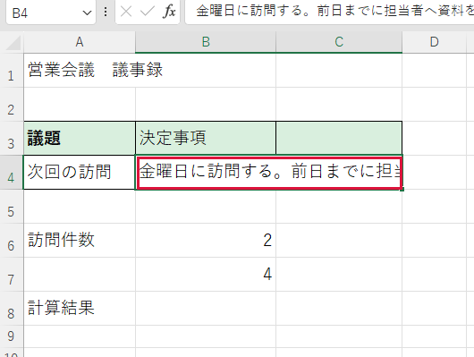
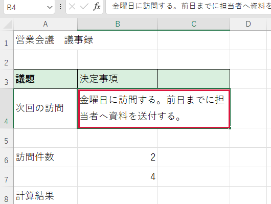

文字が隠れてしまう
画面上部の数式バー（選んだ欄の中身を表示する場所）に全文があるのに、表では途中までしか見えないときに使います。
操作手順
- 文字が切れている欄をクリックします。上部の数式バーで全文を確認します。
- ［ホーム］タブをクリックします。配置に関するボタンが並びます。
- ［折り返して全体を表示する］をクリックします。欄の幅に合わせて文字が次の行に回ります。
- 下の行が見えなければ、左端の行番号の下の境界を下へドラッグします。


できたか確認
文章の最後の文字まで表示されましたか。
注意点
結合セルでは行の高さが自動で広がらないことがあります。幅を変えると同じ列全体に影響します。